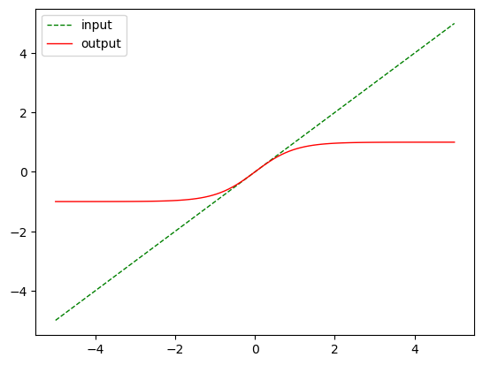

import torch
import numpy as npPytorch Model Creation
Pytorch Model Creation
torch.cuda.is_available()TrueAutograd
x = torch.tensor([1,2,3], dtype=torch.float, requires_grad = True)
xtensor([1., 2., 3.], requires_grad=True)Containers
Module
import torch.nn as nn
import torch.nn.functional as F
class Model(nn.Module):
def __init__(self):
super().__init__()
self.conv1 = nn.Conv2d(1, 20, 5)
self.conv2 = nn.Conv2d(20, 20, 5)
def forward(self, x):
x = F.relu(self.conv1(x))
return F.relu(self.conv2(x))@torch.no_grad()
def init_weights(m):
print(m)
if type(m) == nn.Linear:
m.weight.fill_(1.0)
print(m.weight)net = nn.Sequential(nn.Linear(2, 2), nn.Linear(2, 2))
new = net.apply(init_weights)Linear(in_features=2, out_features=2, bias=True)
Parameter containing:
tensor([[1., 1.],
[1., 1.]], requires_grad=True)
Linear(in_features=2, out_features=2, bias=True)
Parameter containing:
tensor([[1., 1.],
[1., 1.]], requires_grad=True)
Sequential(
(0): Linear(in_features=2, out_features=2, bias=True)
(1): Linear(in_features=2, out_features=2, bias=True)
)model = Model()
modelModel(
(conv1): Conv2d(1, 20, kernel_size=(5, 5), stride=(1, 1))
(conv2): Conv2d(20, 20, kernel_size=(5, 5), stride=(1, 1))
)model.__dict__{'training': True,
'_parameters': OrderedDict(),
'_buffers': OrderedDict(),
'_non_persistent_buffers_set': set(),
'_backward_pre_hooks': OrderedDict(),
'_backward_hooks': OrderedDict(),
'_is_full_backward_hook': None,
'_forward_hooks': OrderedDict(),
'_forward_hooks_with_kwargs': OrderedDict(),
'_forward_hooks_always_called': OrderedDict(),
'_forward_pre_hooks': OrderedDict(),
'_forward_pre_hooks_with_kwargs': OrderedDict(),
'_state_dict_hooks': OrderedDict(),
'_state_dict_pre_hooks': OrderedDict(),
'_load_state_dict_pre_hooks': OrderedDict(),
'_load_state_dict_post_hooks': OrderedDict(),
'_modules': OrderedDict([('conv1',
Conv2d(1, 20, kernel_size=(5, 5), stride=(1, 1))),
('conv2', Conv2d(20, 20, kernel_size=(5, 5), stride=(1, 1)))])}for para in model.parameters():
print(para.shape)torch.Size([20, 1, 5, 5])
torch.Size([20])
torch.Size([20, 20, 5, 5])
torch.Size([20])Sequential
model = nn.Sequential(
nn.Conv2d(1,20,5),
nn.ReLU(),
nn.Conv2d(20,64,5),
nn.ReLU()
)modelSequential(
(0): Conv2d(1, 20, kernel_size=(5, 5), stride=(1, 1))
(1): ReLU()
(2): Conv2d(20, 64, kernel_size=(5, 5), stride=(1, 1))
(3): ReLU()
)ModuleList
class MyModule(nn.Module):
def __init__(self):
super().__init__()
self.linears = nn.ModuleList([nn.Linear(10, 10) for i in range(10)])
def forward(self, x):
# ModuleList can act as an iterable, or be indexed using ints
for i, l in enumerate(self.linears):
x = self.linears[i // 2](x) + l(x)
return xmodel = MyModule()
modelMyModule(
(linears): ModuleList(
(0-9): 10 x Linear(in_features=10, out_features=10, bias=True)
)
)class MyModule(nn.Module):
def __init__(self):
super().__init__()
self.choices = nn.ModuleDict({
'conv': nn.Conv2d(10, 10, 3),
'pool': nn.MaxPool2d(3)
})
self.activations = nn.ModuleDict([
['lrelu', nn.LeakyReLU()],
['prelu', nn.PReLU()]
])
def forward(self, x, choice, act):
x = self.choices[choice](x)
x = self.activations[act](x)
return xmodel = MyModule()
modelMyModule(
(choices): ModuleDict(
(conv): Conv2d(10, 10, kernel_size=(3, 3), stride=(1, 1))
(pool): MaxPool2d(kernel_size=3, stride=3, padding=0, dilation=1, ceil_mode=False)
)
(activations): ModuleDict(
(lrelu): LeakyReLU(negative_slope=0.01)
(prelu): PReLU(num_parameters=1)
)
)ParameterList
class MyModule(nn.Module):
def __init__(self):
super().__init__()
self.params = nn.ParameterList([nn.Parameter(torch.randn(10, 10)) for i in range(10)])
def forward(self, x):
# ParameterList can act as an iterable, or be indexed using ints
for i, p in enumerate(self.params):
x = self.params[i // 2].mm(x) + p.mm(x)
return xmodel = MyModule()
modelMyModule(
(params): ParameterList(
(0): Parameter containing: [torch.float32 of size 10x10]
(1): Parameter containing: [torch.float32 of size 10x10]
(2): Parameter containing: [torch.float32 of size 10x10]
(3): Parameter containing: [torch.float32 of size 10x10]
(4): Parameter containing: [torch.float32 of size 10x10]
(5): Parameter containing: [torch.float32 of size 10x10]
(6): Parameter containing: [torch.float32 of size 10x10]
(7): Parameter containing: [torch.float32 of size 10x10]
(8): Parameter containing: [torch.float32 of size 10x10]
(9): Parameter containing: [torch.float32 of size 10x10]
)
)ParameterDict
class MyModule(nn.Module):
def __init__(self):
super().__init__()
self.params = nn.ParameterDict({
'left': nn.Parameter(torch.randn(5, 10)),
'right': nn.Parameter(torch.randn(5, 10))
})
def forward(self, x, choice):
x = self.params[choice].mm(x)
return xmodel = MyModule()
modelMyModule(
(params): ParameterDict(
(left): Parameter containing: [torch.FloatTensor of size 5x10]
(right): Parameter containing: [torch.FloatTensor of size 5x10]
)
)Convolution Layers
nn.Conv1d
input1 = torch.torch.tensor([[[[ 1., 2., 3., 4., 5.],
[ 6., 7., 8., 9., 10.],
[11., 12., 13., 14., 15.],
[16., 17., 18., 19., 20.]]]])new = input1.reshape(4,5)
newtensor([[ 1., 2., 3., 4., 5.],
[ 6., 7., 8., 9., 10.],
[11., 12., 13., 14., 15.],
[16., 17., 18., 19., 20.]])m = nn.Conv1d(4, 2, 3, stride=2)
type(m)torch.nn.modules.conv.Conv1dfor para in m.parameters():
print(para.shape)torch.Size([2, 4, 3])
torch.Size([2])# input = torch.randn(20, 16, 50)
output = m(new)output.shapetorch.Size([2, 2])outputtensor([[-1.3600, -1.1102],
[ 6.1355, 6.0188]], grad_fn=<SqueezeBackward1>)nn.Conv2d
new = input1.reshape(4, 5,1)
newtensor([[[ 1.],
[ 2.],
[ 3.],
[ 4.],
[ 5.]],
[[ 6.],
[ 7.],
[ 8.],
[ 9.],
[10.]],
[[11.],
[12.],
[13.],
[14.],
[15.]],
[[16.],
[17.],
[18.],
[19.],
[20.]]])# With square kernels and equal stride
m = nn.Conv2d(4, 2, 3, stride=2)
# non-square kernels and unequal stride and with padding
m = nn.Conv2d(4, 2, (3, 5), stride=(2, 1), padding=(4, 2))
# non-square kernels and unequal stride and with padding and dilation
m = nn.Conv2d(4, 2, (3, 5), stride=(2, 1), padding=(4, 2), dilation=(3, 1))
output = m(new)
output.shapetorch.Size([2, 4, 1])outputtensor([[[-1.3839],
[-1.8465],
[-0.8563],
[-0.0644]],
[[ 1.2715],
[ 1.5135],
[-2.8098],
[-3.2210]]], grad_fn=<SqueezeBackward1>)nn.Conv3d
# With square kernels and equal stride
m = nn.Conv3d(16, 33, 3, stride=2)
# non-square kernels and unequal} stride and with padding
m = nn.Conv3d(16, 33, (3, 5, 2), stride=(2, 1, 1), padding=(4, 2, 0))
input = torch.randn(20, 16, 10, 50, 100)
output = m(input)output.shapetorch.Size([20, 33, 8, 50, 99])nn.ConvTranspose2d
This module can be seen as the gradient of Conv2d with respect to its input. It is also known as a fractionally-strided convolution or a deconvolution (although it is not an actual deconvolution operation as it does not compute a true inverse of convolution).
# With square kernels and equal stride
m = nn.ConvTranspose2d(16, 33, 3, stride=2)
# non-square kernels and unequal stride and with padding
m = nn.ConvTranspose2d(16, 33, (3, 5), stride=(2, 1), padding=(4, 2))
input = torch.randn(20, 16, 50, 100)
output = m(input)
output.shapetorch.Size([20, 33, 93, 100])# exact output size can be also specified as an argument
input = torch.randn(1, 16, 12, 12)
downsample = nn.Conv2d(16, 16, 3, stride=2, padding=1)
upsample = nn.ConvTranspose2d(16, 16, 3, stride=2, padding=1)
h = downsample(input)
h.size()torch.Size([1, 16, 6, 6])output = upsample(h, output_size=input.size())
output.size()torch.Size([1, 16, 12, 12])Pooling Layers
nn.MaxPool2d
Applies a 2D max pooling over an input signal composed of several input planes.
new = input1.reshape(1, 4,5)
newtensor([[[ 1., 2., 3., 4., 5.],
[ 6., 7., 8., 9., 10.],
[11., 12., 13., 14., 15.],
[16., 17., 18., 19., 20.]]])# pool of square window of size=3, stride=2
m = nn.MaxPool2d(3, stride=2)
# pool of non-square window
m = nn.MaxPool2d((2, 2), stride=(2, 1))
input = torch.randn(20, 16, 50, 32)
output = m(new)
outputtensor([[[ 7., 8., 9., 10.],
[17., 18., 19., 20.]]])nn.MaxUnpool2d
Computes a partial inverse of MaxPool2d.
input = torch.tensor([[[[ 1., 2., 3., 4.],
[ 5., 6., 7., 8.],
[ 9., 10., 11., 12.],
[13., 14., 15., 16.]]]])pool = nn.MaxPool2d(2, stride=2, return_indices=True)
unpool = nn.MaxUnpool2d(2, stride=2)
output, indices = pool(input)
unpool(output, indices)tensor([[[[ 0., 0., 0., 0.],
[ 0., 6., 0., 8.],
[ 0., 0., 0., 0.],
[ 0., 14., 0., 16.]]]])input1tensor([[[[ 1., 2., 3., 4., 5.],
[ 6., 7., 8., 9., 10.],
[11., 12., 13., 14., 15.],
[16., 17., 18., 19., 20.]]]])output, indices = pool(input1)
# This call will not work without specifying output_size
unpool(output, indices, output_size=input1.size())tensor([[[[ 0., 0., 0., 0., 0.],
[ 0., 7., 0., 9., 0.],
[ 0., 0., 0., 0., 0.],
[ 0., 17., 0., 19., 0.]]]])nn.AvgPool2d
Applies a 2D average pooling over an input signal composed of several input planes.
input1tensor([[[[ 1., 2., 3., 4., 5.],
[ 6., 7., 8., 9., 10.],
[11., 12., 13., 14., 15.],
[16., 17., 18., 19., 20.]]]])# pool of square window of size=3, stride=2
m = nn.AvgPool2d(3, stride=2)
# pool of non-square window
m = nn.AvgPool2d((2, 2), stride=(1, 1))
# input = torch.randn(20, 16, 50, 32)
output = m(input1)
outputtensor([[[[ 4., 5., 6., 7.],
[ 9., 10., 11., 12.],
[14., 15., 16., 17.]]]])nn.FractionalMaxPool2d
Applies a 2D fractional max pooling over an input signal composed of several input planes.
# pool of square window of size=3, and target output size 13x12
m = nn.FractionalMaxPool2d(3, output_size=(13, 12))
# pool of square window and target output size being half of input image size
m = nn.FractionalMaxPool2d(2, output_ratio=(0.7, 0.7))
output = m(input1)
outputtensor([[[[ 7., 8., 10.],
[17., 18., 20.]]]])nn.LPPool2d
Applies a 2D power-average pooling over an input signal composed of several input planes.
# power-2 pool of square window of size=3, stride=2
m = nn.LPPool2d(2, 3, stride=2)
# pool of non-square window of power 1.2
m = nn.LPPool2d(1.2, (3, 2), stride=(2, 1))
output = m(input)
outputtensor([[[[25.4396, 29.7206, 34.0561]]]])nn.AdaptiveMaxPool2d
Applies a 2D adaptive max pooling over an input signal composed of several input planes.
# target output size of 5x7
m = nn.AdaptiveMaxPool2d((5, 7))
output = m(input1)
outputtensor([[[[ 1., 2., 3., 3., 4., 5., 5.],
[ 6., 7., 8., 8., 9., 10., 10.],
[11., 12., 13., 13., 14., 15., 15.],
[16., 17., 18., 18., 19., 20., 20.],
[16., 17., 18., 18., 19., 20., 20.]]]])# target output size of 7x7 (square)
m = nn.AdaptiveMaxPool2d(7)
output = m(input1)
outputtensor([[[[ 1., 2., 3., 3., 4., 5., 5.],
[ 6., 7., 8., 8., 9., 10., 10.],
[ 6., 7., 8., 8., 9., 10., 10.],
[11., 12., 13., 13., 14., 15., 15.],
[11., 12., 13., 13., 14., 15., 15.],
[16., 17., 18., 18., 19., 20., 20.],
[16., 17., 18., 18., 19., 20., 20.]]]])# target output size of 10x7
m = nn.AdaptiveMaxPool2d((None, 7))
output = m(input1)
outputtensor([[[[ 1., 2., 3., 3., 4., 5., 5.],
[ 6., 7., 8., 8., 9., 10., 10.],
[11., 12., 13., 13., 14., 15., 15.],
[16., 17., 18., 18., 19., 20., 20.]]]])nn.AdaptiveAvgPool2d
Applies a 2D adaptive average pooling over an input signal composed of several input planes.
# target output size of 5x7
m = nn.AdaptiveAvgPool2d((5, 7))
m(input1)tensor([[[[ 1.0000, 1.5000, 2.5000, 3.0000, 3.5000, 4.5000, 5.0000],
[ 3.5000, 4.0000, 5.0000, 5.5000, 6.0000, 7.0000, 7.5000],
[ 8.5000, 9.0000, 10.0000, 10.5000, 11.0000, 12.0000, 12.5000],
[13.5000, 14.0000, 15.0000, 15.5000, 16.0000, 17.0000, 17.5000],
[16.0000, 16.5000, 17.5000, 18.0000, 18.5000, 19.5000, 20.0000]]]])# target output size of 7x7 (square)
m = nn.AdaptiveAvgPool2d(7)
m(input1)tensor([[[[ 1.0000, 1.5000, 2.5000, 3.0000, 3.5000, 4.5000, 5.0000],
[ 3.5000, 4.0000, 5.0000, 5.5000, 6.0000, 7.0000, 7.5000],
[ 6.0000, 6.5000, 7.5000, 8.0000, 8.5000, 9.5000, 10.0000],
[ 8.5000, 9.0000, 10.0000, 10.5000, 11.0000, 12.0000, 12.5000],
[11.0000, 11.5000, 12.5000, 13.0000, 13.5000, 14.5000, 15.0000],
[13.5000, 14.0000, 15.0000, 15.5000, 16.0000, 17.0000, 17.5000],
[16.0000, 16.5000, 17.5000, 18.0000, 18.5000, 19.5000, 20.0000]]]])# target output size of 10x7
m = nn.AdaptiveAvgPool2d((None, 7))
m(input1)tensor([[[[ 1.0000, 1.5000, 2.5000, 3.0000, 3.5000, 4.5000, 5.0000],
[ 6.0000, 6.5000, 7.5000, 8.0000, 8.5000, 9.5000, 10.0000],
[11.0000, 11.5000, 12.5000, 13.0000, 13.5000, 14.5000, 15.0000],
[16.0000, 16.5000, 17.5000, 18.0000, 18.5000, 19.5000, 20.0000]]]])Padding Layers
nn.ReflectionPad2d
Pads the input tensor using the reflection of the input boundary.
m = nn.ReflectionPad2d(2)
input = torch.arange(9, dtype=torch.float).reshape(1, 1, 3, 3)
inputtensor([[[[0., 1., 2.],
[3., 4., 5.],
[6., 7., 8.]]]])m(input)tensor([[[[8., 7., 6., 7., 8., 7., 6.],
[5., 4., 3., 4., 5., 4., 3.],
[2., 1., 0., 1., 2., 1., 0.],
[5., 4., 3., 4., 5., 4., 3.],
[8., 7., 6., 7., 8., 7., 6.],
[5., 4., 3., 4., 5., 4., 3.],
[2., 1., 0., 1., 2., 1., 0.]]]])# using different paddings for different sides
m = nn.ReflectionPad2d((1, 1, 2, 0))
m(input)tensor([[[[7., 6., 7., 8., 7.],
[4., 3., 4., 5., 4.],
[1., 0., 1., 2., 1.],
[4., 3., 4., 5., 4.],
[7., 6., 7., 8., 7.]]]])nn.ReplicationPad2d
Pads the input tensor using replication of the input boundary.
m = nn.ReplicationPad2d(2)
m(input)tensor([[[[0., 0., 0., 1., 2., 2., 2.],
[0., 0., 0., 1., 2., 2., 2.],
[0., 0., 0., 1., 2., 2., 2.],
[3., 3., 3., 4., 5., 5., 5.],
[6., 6., 6., 7., 8., 8., 8.],
[6., 6., 6., 7., 8., 8., 8.],
[6., 6., 6., 7., 8., 8., 8.]]]])# using different paddings for different sides
m = nn.ReplicationPad2d((1, 1, 2, 0))
m(input)tensor([[[[0., 0., 1., 2., 2.],
[0., 0., 1., 2., 2.],
[0., 0., 1., 2., 2.],
[3., 3., 4., 5., 5.],
[6., 6., 7., 8., 8.]]]])nn.ZeroPad2d
Pads the input tensor boundaries with zero.
m = nn.ZeroPad2d(2)
m(input)tensor([[[[0., 0., 0., 0., 0., 0., 0.],
[0., 0., 0., 0., 0., 0., 0.],
[0., 0., 0., 1., 2., 0., 0.],
[0., 0., 3., 4., 5., 0., 0.],
[0., 0., 6., 7., 8., 0., 0.],
[0., 0., 0., 0., 0., 0., 0.],
[0., 0., 0., 0., 0., 0., 0.]]]])# using different paddings for different sides
m = nn.ZeroPad2d((1, 1, 2, 0))
m(input)tensor([[[[0., 0., 0., 0., 0.],
[0., 0., 0., 0., 0.],
[0., 0., 1., 2., 0.],
[0., 3., 4., 5., 0.],
[0., 6., 7., 8., 0.]]]])nn.ConstantPad2d
Pads the input tensor boundaries with a constant value.
m = nn.ConstantPad2d(2, 11)
m(input)tensor([[[[11., 11., 11., 11., 11., 11., 11.],
[11., 11., 11., 11., 11., 11., 11.],
[11., 11., 0., 1., 2., 11., 11.],
[11., 11., 3., 4., 5., 11., 11.],
[11., 11., 6., 7., 8., 11., 11.],
[11., 11., 11., 11., 11., 11., 11.],
[11., 11., 11., 11., 11., 11., 11.]]]])# using different paddings for different sides
m = nn.ConstantPad2d((3, 0, 2, 1), 11)
m(input)tensor([[[[11., 11., 11., 11., 11., 11.],
[11., 11., 11., 11., 11., 11.],
[11., 11., 11., 0., 1., 2.],
[11., 11., 11., 3., 4., 5.],
[11., 11., 11., 6., 7., 8.],
[11., 11., 11., 11., 11., 11.]]]])Non-linear Activations (weighted sum, nonlinearity)
input = torch.linspace(-5,5,100)import matplotlib.pyplot as plt
def plot_show(input, output):
plt.plot(input, input, color='green', linestyle='dashed',
linewidth=1, label = 'input')
plt.plot(input, output, color='red',
linewidth=1, label = 'output')
plt.legend()
plt.show()nn.LogSigmoid()
m = nn.LogSigmoid()
output = m(input)plot_show(input, output)nn.ReLU()
m = nn.ReLU()
output = m(input)
plot_show(input, output)nn.LeakyReLU(0.5)
m = nn.LeakyReLU(0.5)
output = m(input)
plot_show(input, output)m = nn.SELU()
output = m(input)
plot_show(input, output)nn.Sigmoid()
m = nn.Sigmoid()
output = m(input)
plot_show(input, output)nn.Softplus()
m = nn.Softplus()
output = m(input)
plot_show(input, output)nn.Tanh()
m = nn.Tanh()
output = m(input)
plot_show(input, output)
nn.Threshold
m = nn.Threshold(0, -5)
output = m(input)
plot_show(input, output)nn.SELU
Non-linear Activations (other)
input = torch.linspace(-1,1,10)
input = input.reshape(2,5)
inputtensor([[-1.0000, -0.7778, -0.5556, -0.3333, -0.1111],
[ 0.1111, 0.3333, 0.5556, 0.7778, 1.0000]])m = nn.Softmin(dim=1)output = m(input)outputtensor([[0.2970, 0.2379, 0.1905, 0.1525, 0.1221],
[0.2970, 0.2379, 0.1905, 0.1525, 0.1221]])output.sum()tensor(2.0000)plot_show(input.flatten(), output.flatten())Normalization Layers
nn.BatchNorm2d
input = torch.arange(27, dtype=torch.float).reshape(1,3, 3, 3)
inputtensor([[[[ 0., 1., 2.],
[ 3., 4., 5.],
[ 6., 7., 8.]],
[[ 9., 10., 11.],
[12., 13., 14.],
[15., 16., 17.]],
[[18., 19., 20.],
[21., 22., 23.],
[24., 25., 26.]]]])# With Learnable Parameters
m = nn.BatchNorm2d(3)
# Without Learnable Parameters
m = nn.BatchNorm2d(3, affine=False)
output = m(input)
outputtensor([[[[-1.5492e+00, -1.1619e+00, -7.7460e-01],
[-3.8730e-01, 0.0000e+00, 3.8730e-01],
[ 7.7460e-01, 1.1619e+00, 1.5492e+00]],
[[-1.5492e+00, -1.1619e+00, -7.7460e-01],
[-3.8730e-01, 1.7881e-07, 3.8730e-01],
[ 7.7460e-01, 1.1619e+00, 1.5492e+00]],
[[-1.5492e+00, -1.1619e+00, -7.7460e-01],
[-3.8730e-01, -3.5763e-07, 3.8730e-01],
[ 7.7460e-01, 1.1619e+00, 1.5492e+00]]]])nn.GroupNorm
# Separate 6 channels into 3 groups
m = nn.GroupNorm(1, 3)
output = m(input)
outputtensor([[[[-1.6690e+00, -1.5407e+00, -1.4123e+00],
[-1.2839e+00, -1.1555e+00, -1.0271e+00],
[-8.9872e-01, -7.7033e-01, -6.4194e-01]],
[[-5.1355e-01, -3.8516e-01, -2.5678e-01],
[-1.2839e-01, -2.9802e-08, 1.2839e-01],
[ 2.5678e-01, 3.8516e-01, 5.1355e-01]],
[[ 6.4194e-01, 7.7033e-01, 8.9872e-01],
[ 1.0271e+00, 1.1555e+00, 1.2839e+00],
[ 1.4123e+00, 1.5407e+00, 1.6690e+00]]]],
grad_fn=<NativeGroupNormBackward0>)input_t = torch.randn(20, 6, 10, 10)
# Separate 6 channels into 6 groups (equivalent with InstanceNorm)
m = nn.GroupNorm(6, 6)
output = m(input_t)# Put all 6 channels into a single group (equivalent with LayerNorm)
m = nn.GroupNorm(1, 6)
# Activating the module
output = m(input_t)nn.LayerNorm
# NLP Example
batch, sentence_length, embedding_dim = 20, 5, 10
embedding = torch.randn(batch, sentence_length, embedding_dim)
layer_norm = nn.LayerNorm(embedding_dim)
# Activate module
output = layer_norm(embedding)embedding[7,:,:].std()tensor(1.0733)output[7,:,:].std()tensor(1.0101, grad_fn=<StdBackward0>)Recurrent Layers
RNNBase - Base class for RNN modules (RNN, LSTM, GRU).
nn.RNN
rnn = nn.RNN(10, 20, 2)
input = torch.randn(5, 3, 10)
h0 = torch.randn(2, 3, 20)
output, hn = rnn(input, h0)output.shapetorch.Size([5, 3, 20])nn.LSTM
lstm = nn.LSTM(10, 20, 2)
input = torch.randn(5, 3, 10)
h0 = torch.randn(2, 3, 20)
c0 = torch.randn(2, 3, 20)
output, (hn, cn) = lstm(input, (h0, c0))
output.shapetorch.Size([5, 3, 20])nn.GRU
gru = nn.GRU(10, 20, 2)
input = torch.randn(5, 3, 10)
h0 = torch.randn(2, 3, 20)
output, hn = gru(input, h0)
output.shapetorch.Size([5, 3, 20])nn.RNNCell
rnn = nn.RNNCell(10, 20)
input = torch.randn(6, 3, 10)
hx = torch.randn(3, 20)
output = []
for i in range(6):
hx = rnn(input[i], hx)
output.append(hx)Transformer Layers
nn.Transformer
transformer_model = nn.Transformer(nhead=16, num_encoder_layers=12)
src = torch.rand((10, 32, 512))
tgt = torch.rand((20, 32, 512))
out = transformer_model(src, tgt)nn.TransformerEncoderLayer
encoder_layer = nn.TransformerEncoderLayer(d_model=512, nhead=8)
transformer_encoder = nn.TransformerEncoder(encoder_layer, num_layers=6)
src = torch.rand(10, 32, 512)
out = transformer_encoder(src)nn.TransformerDecoderLayer
decoder_layer = nn.TransformerDecoderLayer(d_model=512, nhead=8)
transformer_decoder = nn.TransformerDecoder(decoder_layer, num_layers=6)
memory = torch.rand(10, 32, 512)
tgt = torch.rand(20, 32, 512)
out = transformer_decoder(tgt, memory)nn.TransformerEncoderLayer
encoder_layer = nn.TransformerEncoderLayer(d_model=512, nhead=8, batch_first=True)
src = torch.rand(32, 10, 512)
out = encoder_layer(src)nn.TransformerDecoderLayer
decoder_layer = nn.TransformerDecoderLayer(d_model=512, nhead=8, batch_first=True)
memory = torch.rand(32, 10, 512)
tgt = torch.rand(32, 20, 512)
out = decoder_layer(tgt, memory)Linear Layers
nn.Identity
A placeholder identity operator that is argument-insensitive.
m = nn.Identity(54, unused_argument1=0.1, unused_argument2=False)
input = torch.randn(128, 20)
output = m(input)
print(output.size())torch.Size([128, 20])nn.Linear
m = nn.Linear(20, 30)
input = torch.randn(128, 20)
output = m(input)
print(output.size())torch.Size([128, 30])for para in m.parameters():
print(para.shape)torch.Size([30, 20])
torch.Size([30])Dropout Layers
m = nn.Dropout(p=0.2)
input = torch.randn(20, 16)
output = m(input)
output.shapetorch.Size([20, 16])m = nn.Dropout2d(p=0.2)
input = torch.randn(20, 16, 32, 32)
output = m(input)
output.shapetorch.Size([20, 16, 32, 32])m = nn.AlphaDropout(p=0.2)
input = torch.randn(20, 16)
output = m(input)
output.shapetorch.Size([20, 16])m = nn.FeatureAlphaDropout(p=0.2)
input = torch.randn(20, 16, 4, 32, 32)
output = m(input)
output.shapetorch.Size([20, 16, 4, 32, 32])Loss Functions
nn.L1Loss
input = torch.linspace(1,10,10, requires_grad=True)
target = torch.linspace(1.1, 10.1, 10, requires_grad=True)
input, target(tensor([ 1., 2., 3., 4., 5., 6., 7., 8., 9., 10.], requires_grad=True),
tensor([ 1.1000, 2.1000, 3.1000, 4.1000, 5.1000, 6.1000, 7.1000, 8.1000,
9.1000, 10.1000], requires_grad=True))loss = nn.L1Loss()
output = loss(input, target)
outputtensor(0.1000, grad_fn=<MeanBackward0>)nn.MSELoss
loss = nn.MSELoss()
output = loss(input, target)
outputtensor(0.0100, grad_fn=<MseLossBackward0>)nn.CrossEntropyLoss
# Example of target with class indices
loss = nn.CrossEntropyLoss()
output = loss(input, target)
outputtensor(195.1833, grad_fn=<DivBackward1>)loss = nn.GaussianNLLLoss()
var = torch.ones(10, requires_grad=True) # heteroscedastic
output = loss(input, target, var)
outputtensor(0.0050, grad_fn=<MeanBackward0>)Vision Layers
Rearrange elements in a tensor according to an upscaling factor.
pixel_shuffle = nn.PixelShuffle(3)
input = torch.randn(1, 9, 4, 4)
output = pixel_shuffle(input)
print(output.size())torch.Size([1, 1, 12, 12])pixel_unshuffle = nn.PixelUnshuffle(3)
input = torch.randn(1, 1, 12, 12)
output = pixel_unshuffle(input)
print(output.size())torch.Size([1, 9, 4, 4])